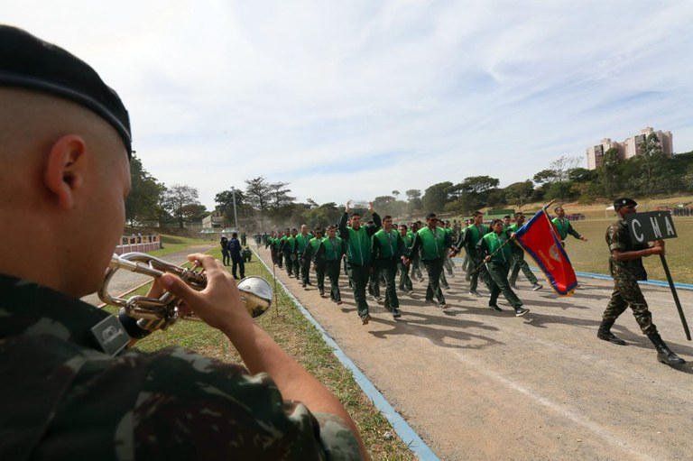

|  |
A Olimpíada do Exército (OE) teve sua origem nos Jogos Desportivos Militares (JDM), competições
regionais da antiga Liga de Sports do Exército (LSE-1920). Foi realizada pela primeira vez no Rio de
Janeiro em 1949.
A partir de 1969 foram organizadas oito olimpíadas: na Academia Militar das Agulhas Negras (AMAN), em Resende (RJ); no Rio de Janeiro (RJ); em Curitiba (PR); em Belo Horizonte (MG); em Porto Alegre (RS); no Recife (PE); em Brasília (DF); e em Campinas (SP). Em 1981 surgiram os Jogos Marciais (JM), em substituição à Olimpíada do Exército, focados principalmente nos esportes militares. Os JM foram realizados até 2009 e, posteriormente, passaram a se chamar Jogos Desportivos do Exército (JDE). No ano de 2011, a competição foi suspensa em razão dos 5º Jogos Mundiais Militares (JMM). Já em 2013, os jogos aconteceram no Rio de Janeiro (RJ) e, em 2015, em Brasília (DF), com a inauguração do Ginásio Vera Cruz, uma moderna arena desportiva do Exército. Também em 2015 ocorreu a sexta edição dos JMM. Com isso, o Exército decidiu alterar os anos de realização dos JDE para os anos pares, de modo a não coincidir com os JMM. Brasília sediou os últimos JDE, em 2018. Em 2020, os jogos foram suspensos em virtude da pandemia de Covid-19 e transferidos para o ano de 2021. Em 2021, as restrições permaneceram e os JDE foram suspensos de novo. |
| Fonte https://olimpiadadoexercito.eb.mil.br/index.php/sobre-o-evento | |